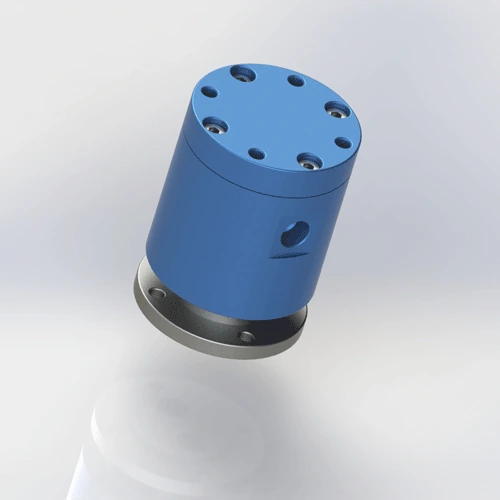

Dual-passage flange-mounted rotary joint for pneumatic and fluid transfer applications. AL6061 body with 45# steel shaft, PTFE composite seal. Two independent passages for clamp + release, gripper + vacuum, or air + signal on rotary tables and welding positioners. Ships in 7 days.
BP-2P-0001 is a dual-passage flange-mounted rotary joint designed for independent two-channel pneumatic and light fluid transfer. The AL6061 body reduces weight while the 45# steel shaft provides rigidity and thread strength. The PTFE composite seal provides low friction and chemical resistance across air, water, and coolant media. Each passage is independently sealed — pressure in channel A does not affect channel B.
| Model Number | BP-2P-0001 |
|---|---|
| Number of Passages | 2-in-2-out (dual passage) |
| Mount Type | Flange Mount |
| Max Pressure | 1 MPa (10 bar / 145 psi) — derate to 0.7 MPa for continuous water duty |
| Max Speed | 200 RPM — derate to 150 RPM for continuous water or coolant |
| Body Material | AL6061 + 45# Steel |
| Seal Type | PTFE Composite Seal |
| Compatible Media | Air, Water, Coolant, Light Hydraulic Oil (ISO VG 32 max) |
| Operating Temperature | -20°C to +80°C |
| Net Weight | Approx. 0.85 kg |
| Certifications | ISO 9001:2015, CE, RoHS |
| Warranty | 12 Months |
AL6061 aluminum body: 6061-T6 aluminum alloy with yield strength 276 MPa and excellent machinability. The aluminum housing reduces overall weight to 0.85 kg while maintaining sufficient rigidity for flange-mounted applications. Anodized surface provides corrosion resistance for intermittent water and coolant exposure. Not recommended for continuous immersion in aggressive coolant without additional surface treatment.
45# steel shaft: Chinese standard carbon steel (equivalent to AISI 1045) with yield strength 355 MPa and hardness 170–210 HB. The steel shaft provides the rigidity and thread strength needed for the rotating interface. The hybrid construction places steel where strength matters and aluminum where weight savings matter.
PTFE composite seal: Polytetrafluoroethylene with glass fiber and graphite filler. Self-lubricating, chemically inert, and rated for -200°C to +260°C. The dual-passage design uses two independent seal rings, one per channel, ensuring no cross-contamination between clamp and unclamp lines. FKM O-ring provides static sealing at the housing interface.
BP-2P-0001 is designed for dual-function rotary applications where two independent air lines must rotate together. The flange mount provides the rigidity needed for machine-frame integration. This model may be suitable for the listed applications when its passage count, mounting, medium, pressure, speed, and temperature limits match the machine requirements.
Proper installation extends seal life from 6 months to 12+ months. The most common cause of early failure on flange-mounted joints is using the flange bolts to correct shaft misalignment, which loads the bearing and seal unevenly. Follow these steps for reliable operation.
Confirm your equipment's flange dimensions and bolt pattern match the rotary joint flange specification. Download the 2D drawing for exact flange OD, bolt circle diameter, hole count, and tolerances. Do not use the flange bolts to pull a misaligned shaft into position — the flange is for mounting, not alignment. Misalignment >0.05 mm will overload the bearing and cause seal eccentric wear. Align the shaft independently before bolting the flange.
Place a flat gasket (provided) between the flange faces. Tighten bolts evenly in a cross pattern to the specified torque. Typical flange bolt torque: M6 bolts at 8–12 N·m, M8 bolts at 18–25 N·m depending on the flange pattern. Do not overtighten — excessive flange bolt torque warps the AL6061 housing, distorting the seal bore. Use a torque wrench and tighten in three stages: 50%, 75%, 100% of final torque.
BP-2P-0001 is flange-mounted, which provides primary anti-rotation through the bolted flange. If your model includes an additional anti-rotation tab, secure it to a fixed bracket with a loose-fit pin or slot — the tab prevents rotation but must not constrain axial or radial movement. Never rigidly clamp the body — thermal expansion and bearing float require slight axial freedom.
Use flexible hoses (not rigid pipe) to connect both stationary inlet ports to the air supply. Rigid pipe transfers vibration and thermal expansion directly to the joint, stressing the seal. Install a 40-micron filter upstream of each passage to protect the PTFE seal from debris. For water or coolant, add a Y-strainer (60 mesh) to prevent particulate damage. Label hoses clearly — cross-connecting clamp and unclamp lines can damage the fixture.
Run at low pressure (0.2 MPa) and low speed (50–100 RPM) for 5 minutes without load on both passages. This beds the PTFE seals against the shaft surface, creating a micro-smooth contact zone. Check for leaks at the flange gasket and both seal interfaces. If dry, gradually increase to operating pressure and speed over 10 minutes. Skipping the run-in is the #2 cause of early seal failure — the seal needs time to conform to the shaft surface finish.
Full dimensions, tolerances, flange bolt pattern, shaft finish requirements, and seal groove details. 120 KB.
Free 3D files provided after inquiry. Includes flange mount pattern and dual-passage port arrangement. Use for CAD fit verification before ordering.
Complete guide: flange alignment, bolt torque, anti-rotation, filtration, run-in procedure, and maintenance checklist. 650 KB.
AL6061 + 45# steel material traceability, hardness test report, and RoHS compliance certificate. Available upon request with order.
Not sure if BP-2P-0001 is the right model? Use this comparison to decide — and know exactly when to upgrade to a multi-passage or higher-pressure joint.
| Your Requirement | BP-2P-0001 Fit | Better Alternative | Why Upgrade |
|---|---|---|---|
| Clamp + unclamp, 2 independent lines, flange mount | ✅ Perfect — dual passage, rigid flange | — | — |
| Gripper + vacuum, dual function rotary table | ✅ Good — independent seals prevent interference | — | — |
| Single air line, weight critical, handheld tool | ❌ Too heavy and complex | BP-1P-0003 | 0.08 kg aluminum, single passage, threaded mount |
| Pressure >1.0 MPa (e.g., 1.2 MPa hydraulic) | ❌ Over pressure rating | BP-2P-0002 | 1.5 MPa rated, threaded mount, dual passage |
| 3+ independent functions (clamp + unclamp + vacuum) | ❌ Too few passages | BP-3P-0004 | 3 passages with independent seals, flange mount |
| Dusty or abrasive environment (steel mill, foundry) | ❌ No dust protection | BP-2P-50-0001 | Dust-proof seal and protective shroud |
| Food-grade or medical cleanroom | ❌ Standard FKM not FDA | Custom FDA-grade | FDA 21 CFR 177.2600 compliant FKM or EPDM seal |
The #1 cause of BP-2P-0001 bearing failure is pulling a misaligned shaft into place with the flange bolts. The flange is for mounting, not alignment. When the shaft is offset by even 0.1 mm, the flange bolts create a bending moment that loads the bearing unevenly. Within 3 months, the bearing develops axial play and the seal leaks. The technician replaces the seal twice before realizing the shaft is misaligned. Rule: Align the shaft independently to <0.05 mm runout before bolting the flange. Use a dial indicator on the shaft OD.
A machine builder connects both passages with rigid steel pipe to "save space." The pipe transfers machine vibration and thermal expansion directly to the rotary joint housing. Within 6 weeks, the PTFE seal develops micro-cracks from cyclic stress, and both passages leak. The builder blames seal quality, but the root cause was rigid piping. Rule: Use flexible hoses with a minimum 50 mm bend radius. Rigid pipe is acceptable only on the stationary side if supported independently — never let the pipe load the joint.
A maintenance team installs BP-2P-0001 on a welding positioner and immediately runs it at 0.8 MPa and 150 RPM on both passages. The PTFE seals have not bedded into the shaft surface — microscopic high spots create leak paths. Within 2 weeks, clamp pressure drops from 0.6 MPa to 0.4 MPa, and fixtures release during welding. The team replaces both seals, but the same thing happens again because they skip the run-in every time. Rule: Run at 0.2 MPa and 50–100 RPM for 5 minutes on both passages before full operation. This beds the seals and extends life from 6 months to 12+ months.
Other rotary joints commonly purchased with BP-2P-0001 — or the models you upgrade to when your application outgrows two passages.
The standard version uses AL6061 + 45# steel construction combining a lightweight AL6061 body with a high-strength 45# steel shaft. All versions are manufactured to the same ISO 9001:2015 quality system and undergo 100% pressure testing before shipment. The domestic and export designations refer only to packaging and documentation language — the product itself is identical. For full steel body options or custom materials, contact our engineering team.
Yes — the PTFE composite seal is compatible with water, water-soluble coolant, and light hydraulic oil (up to ISO VG 32). For continuous water duty, derate pressure to 0.7 MPa and speed to 150 RPM to reduce seal wear. The 45# steel shaft provides good corrosion resistance for intermittent water exposure, but continuous immersion requires nickel plating or stainless steel (304/316) specification. The AL6061 body has an anodized surface that resists intermittent coolant spray. If your application involves deionized water or aggressive coolant, contact Begapunk for seal compatibility review.
BP-2P-0001 uses a machined flat flange with a bolt circle and through-holes for M6 or M8 bolts (depending on the production batch). The flange face is machined to a flatness of 0.02 mm to ensure gasket sealing. Download the 2D PDF drawing for exact flange OD, bolt circle diameter, hole count, hole diameter, and tolerances. Ensure your equipment mating flange matches before ordering. Custom flange patterns, including metric and imperial bolt circles, are available as custom orders with 10–14 day lead time.
Yes — free 3D STEP and IGES files are provided after you send an inquiry. The file includes the flange mount pattern, dual-passage port arrangement, and both AL6061 and 45# steel component details. Use the 3D file to verify clearance, bolt hole alignment, and port direction in your CAD assembly before ordering. 3D files may be provided for qualified projects after the application requirements are reviewed. File availability and response time depend on the model and the project information provided. Include your CAD software name if you need a specific file format.
Upgrade when your application needs 3 or more independent air functions, higher pressure, or a dust-proof seal. Common triggers: (1) You add a third function (e.g., clamp + unclamp + vacuum) to a dual-function fixture — BP-3P-0004 provides three independent passages. (2) Your pressure requirement exceeds 1.0 MPa — BP-2P-0002 handles 1.5 MPa in a threaded mount. (3) Your environment becomes dusty or abrasive — BP-2P-50-0001 has dust-proof protection. (4) You need a food-grade or medical cleanroom seal — custom FDA-grade options are available. The upgrade cost is typically $20–$60 more than BP-2P-0001, but it prevents the $300+ cost of production downtime from inadequate channel count.
We design custom rotary joints for any number of passages, pressure, thread type, and mounting style. Free 3D STEP file with every inquiry. Typical custom lead time: 10–14 days.
Request Custom Design →Technical Note: All pressure ratings, speed ratings, and material specifications referenced on this page are based on Begapunk BP-series standard pneumatic rotary joints tested under controlled laboratory conditions. Actual performance depends on operating conditions, media quality, installation practices, and maintenance schedule. For applications outside standard ratings — including high-pressure hydraulic, continuous water immersion, food-grade, or cleanroom environments — consult Begapunk factory engineering before specification. Last updated: June 11, 2026.